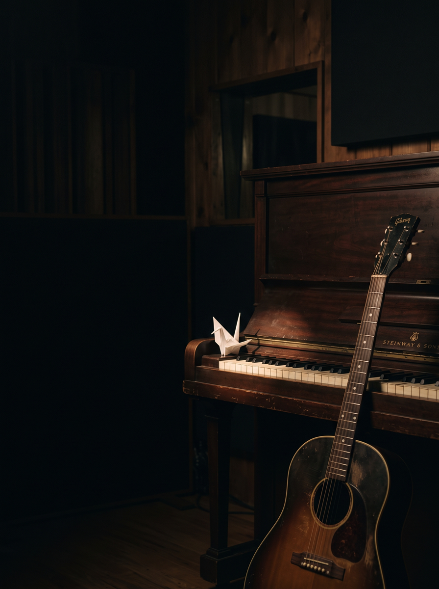

01 Proposta de Sociedade
Vila Lúdica
Para Layane e Lorrane. A nossa marca, o nosso ativo.
- Zero Exposição.
- Áudio Orgânico.
- Visuais por IA.
02 A Tese
A saturação do mercado infantil.
Pais estão exaustos de vídeos estridentes e superestimulantes. Nossa entrega será o exato oposto.
O mercado implora por conteúdos calmos para rotinas de sono e foco. A Vila Lúdica é um projeto de execução puramente acústica (violão, piano e as nossas três vozes em harmonia), resgatando cantigas antigas de domínio público.
A monetização ocorre através de repetição em massa de compilações longas no YouTube e playlists de rotina no Spotify, gerando escala contínua de royalties em dólar.
- 40% Caixa da Marca (IA/Tráfego)
- 20% Leandro
- 20% Layane
- 20% Lorrane
03 Estrutura Operacional
Trabalho Inteligente.
-
01
Bastidores Blindados
Não precisamos atuar, montar cenários ou gravar vídeos. Nossa entrega exige apenas qualidade de microfone e arranjos bem feitos.
-
02
Engenharia Visual
O canal possuirá uma identidade visual impecável, com personagens e cenários inteiramente gerados por IA, garantindo escalabilidade infinita sem custos de animação tradicional.
-
03
Custo Zero de Direitos
Utilizaremos exclusivamente obras que já transitaram para domínio público. Nós seremos os donos da gravação fonográfica original, com lucros 100% da empresa.